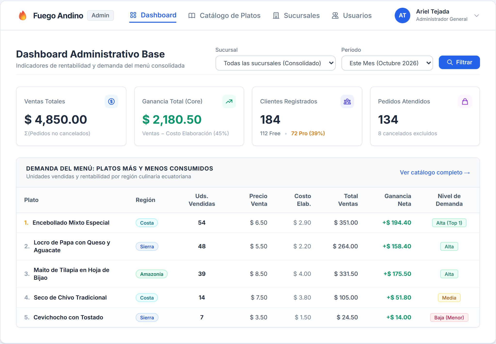
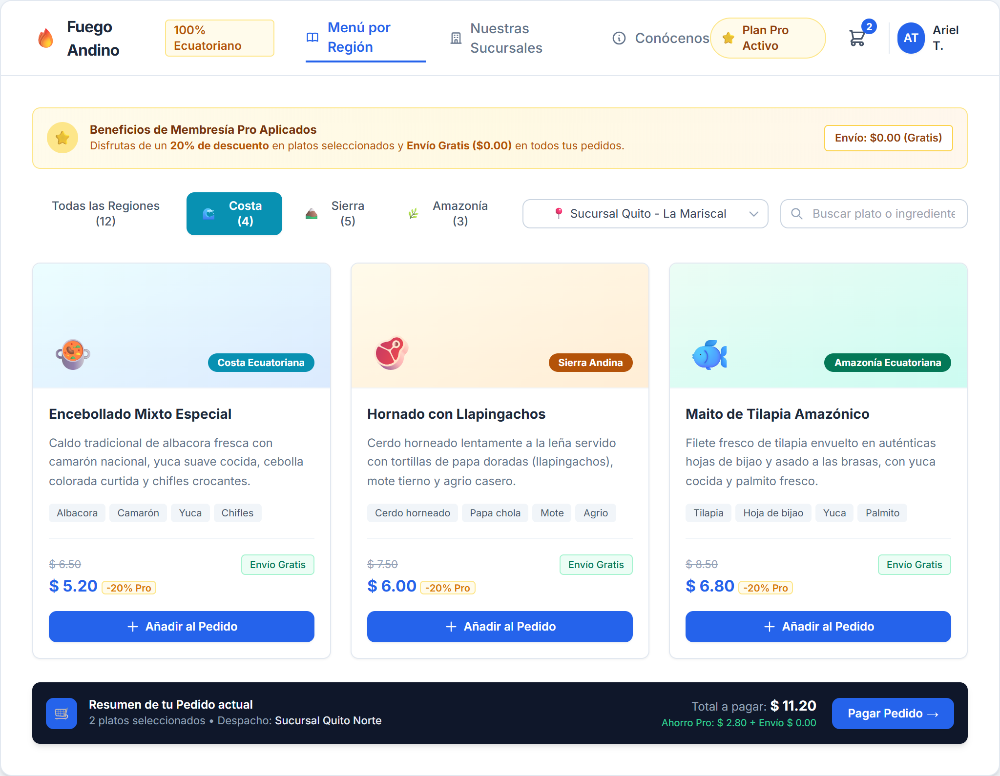
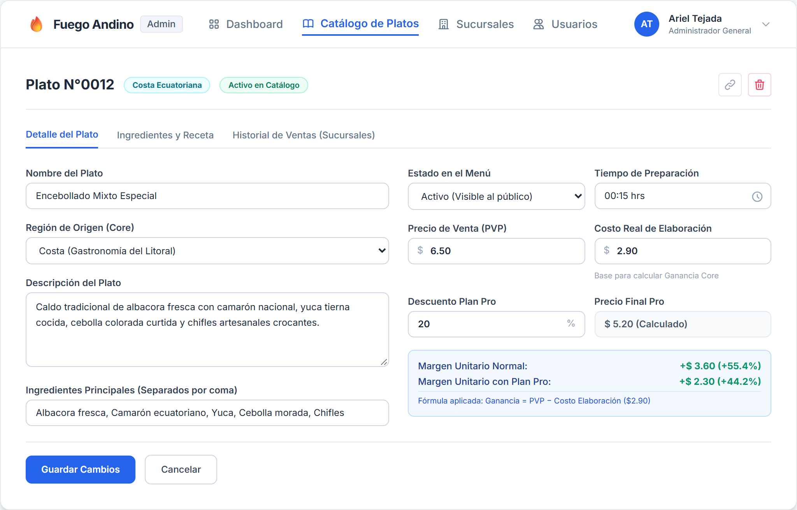

Diseños de interfaz de alta fidelidad correspondientes a los 3 pilares del Core: Dashboard Administrativo Base, Menú de Platos por Región, y Detalle/Gestión de Platos.
En el apartado para la gestión y análisis del negocio, los administradores podrán consultar el rendimiento global de la franquicia mediante el dashboard administrativo base. En esta interfaz, el administrador puede filtrar los datos por sucursal específica y por período de tiempo (hoy, semana o mes). La pantalla presenta los indicadores clave de negocio (KPIs) requeridos por el Core: ventas totales consolidadas de pedidos no cancelados, ganancia neta total obtenida tras descontar el costo real de elaboración de los platos, y la cantidad de clientes registrados segmentados según su membresía (cuentas Free y cuentas Pro). Asimismo, se incluye una tabla con el ranking de los platos más y menos consumidos para facilitar la toma de decisiones operativas.

Figura 1. Interfaz para la visualización del dashboard administrativo base.
En la interfaz que se muestra a continuación, tanto los visitantes como los clientes registrados (Free y Pro) pueden explorar la oferta gastronómica ecuatoriana del restaurante a través del catálogo interactivo organizado por regiones geográficas (Costa, Sierra y Amazonía). La pantalla permite filtrar los platos mediante pestañas rápidas y visualizar el precio estándar junto con el precio promocional exclusivo para clientes con Plan Pro (descuento del 20% aplicado y beneficio de envío gratuito garantizado). Desde esta vista, el usuario puede seleccionar la sucursal de entrega más cercana, consultar los ingredientes principales de cada preparación culinaria y añadir platos a su orden de pedido.

Figura 2. Interfaz para la consulta del menú de platos por región.
En la interfaz que se muestra a continuación, los usuarios administradores podrán consultar, dar de alta y modificar el detalle de cada uno de los platos que conforman la carta gastronómica de la franquicia. El formulario permite parametrizar los datos fundamentales para las reglas de negocio del Core: la asignación de la región geográfica de procedencia (Costa, Sierra o Amazonía), el precio de venta al público, el costo real de elaboración (insumo indispensable para que el sistema calcule automáticamente la ganancia por pedido en el dashboard) y el porcentaje de descuento especial para usuarios con Plan Pro. Asimismo, permite registrar los ingredientes asociados a la receta y definir si el plato se encuentra activo en el menú.

Figura 3. Interfaz con el detalle y gestión de plato del catálogo.